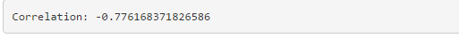

Motor Trend Car Road Tests Dataset - Analysis
Motor Trend Car Road Tests Dataset: The data was extracted from the 1974 Motor Trend US magazine, and comprises fuel consumption and 10 aspects of automobile design and performance for 32 automobiles (1973-74 models).
Data Analysis: There are many factors that can affect to mpg (Miles per gallon), and therefore it is required to analyze relationships of many different variables to recognize confounding variables and to avoid omitted-variable bias when estimating mpg.
Analysis Options
- Customize x-axis and/or y-axis
- Customize plotting points by
- Colour
- Size

The resulting PLOT
The resulting plot looks like this
Correlation
Correlation of x-axis variable and y-axis variable is calculated and displayed also.

Future Works
In order for user to be able to perform data analysis on many different datasets, this data product could be expanded by
1. Allowing user to input either:
- Name of a dataset that can be loaded directly using _data_ command in r
- Path to a local csv file that contain any data that user wish to analyze
2. Then data variables shall be loaded automatically into the customized selection boxes of x-axis, y-axis, colour, size